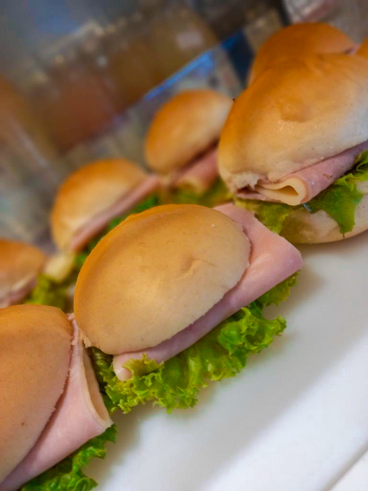

Receitas caseiras de doces e salgados de padaria
cupcakes
Ingredientes:
- 3 gemas;
- 2 xícaras de açúcar;
- 1 colher de sopa de essência de baulinha;
- 250ml de leite;
- 1 xícara de óleo;
- 3 claras em neve;
- 3 e 1/2 xícaras de farinha de trigo;
- 1 colher de sopa de fermento;
- Recheio e cobertura a gosto;
modo de preparo:
- Bata a gema, o açúcar e a baunilha na batedeira;
- Em seguida, acrescente o leite e o óleo e bata mais um pouco;
- Adicione as claras em neve, a farinha de trigo e o fermento e bata mais com o
auxílio de um fouet (não bata na batedeira para que o fermento possa atuar);
- Disponha a massa em forminhas próprias para cupcakes (sem encher muito) e
leve ao forno até dourar;
- Após assado e frios, faça um buraco no centro de cada cupcake com uma faca;
- Reserve a tampinha;
- Coloque o recheio escolhido em um saco de confeitar e junte-o no furo, no centro do cupcake;
- Coloque a tampinha e cubra o cupcake com o a cobertura desejada, aqui
usamos doce de leite para rechear e para cobrir;
- Coloque confeitos de sua preferência;

Pão de frios
ingredientes
- 2 tabletes de fermento biológico no inverno, ou apenas um, no verão;
- 1 colher de sopa rasa de açúcar;
- 1 ovo;
- 1 xícara de chá de água morna;
- 2 colheres de sopa de margarina;
- 1 colher de sobremesa de sal;
- 500g de farinha, mais ou menos até dar ponto;
- Obs: tudo em temperatura ambiente;
- 2 tomates médios picadinhos;
- 1 cebola grande picadinha;
- 1 xícara de azeitonas picadinhas;
- 1 calabresa triturada ou em cubinhos bem pequenos;
- sal e pimenta a gosto;
- os ingredientes do recheio devem ser triturados e reservados;
- 300g de mussarela fatiada;
modo de preparo
- Dissolva o fermento com o açúcar, depois coloque a água, o ovo, a margarina, o sal, mexa bem;
- Acrescente a farinha aos poucos até que a massa não grude mais nas mãos;
- Deixe crescer cerca de 40 minutos ou até a massa dobrar de volume;
- Divida em duas partes, abra, espalhe a mussarela e depois coloque por cima o resto dos ingredientes do recheio,
deixar as bordas sem recheio para poder enrolar, enrole e deixe descansar de 25 a 30 minutos;
- Coloque no forno médio pré-aquecido (180º a 200º graus),
por mais ou menos 30 minutos, ou até que esteja dourado;
- Se gostar mais moreninho, pincele uma gema de ovo, antes de levar ao forno;
